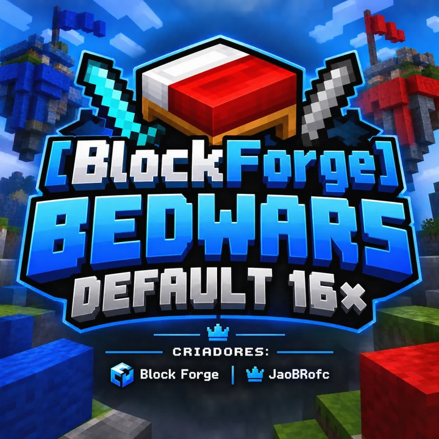

Textura PvP 16× pra Bedwars no Minecraft Bedrock — visual limpo e leve, lã e concreto nítidos nas 16 cores pra reconhecer time rápido, com menus em dark mode.
Versão 1.0.0 · Bedrock 1.16 ou superior · 7,3 MB, 1313 texturas
⬇ Baixar pacote (.zip)O arquivo já está aqui do lado do index.html, não precisa de internet pra baixar.